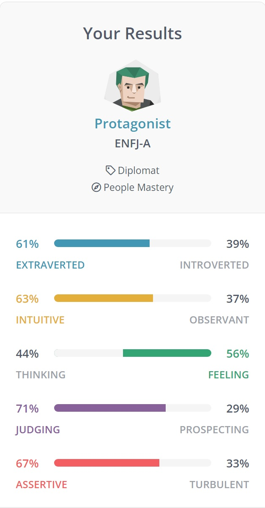
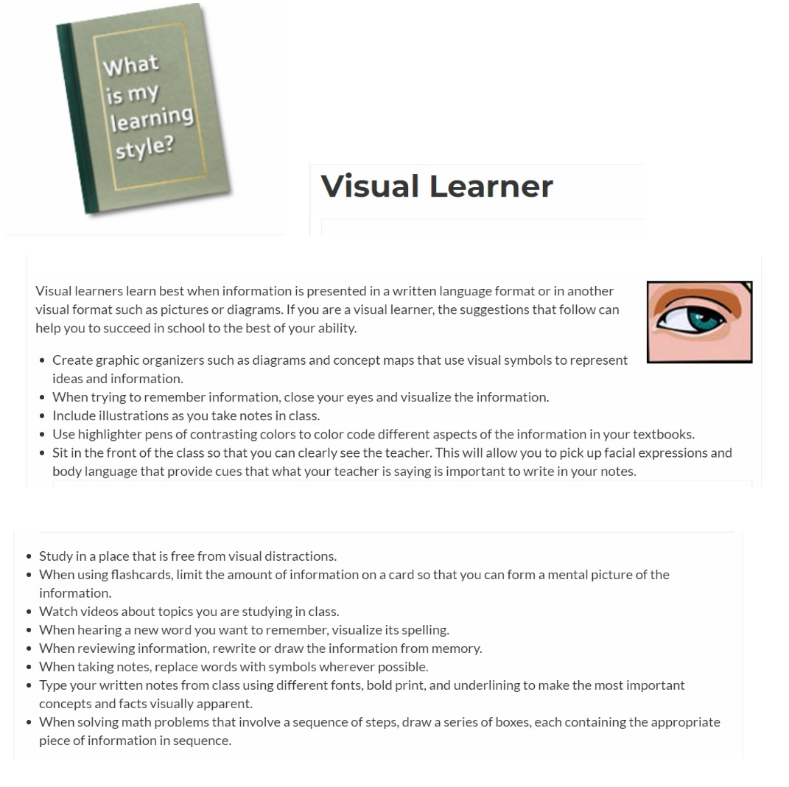
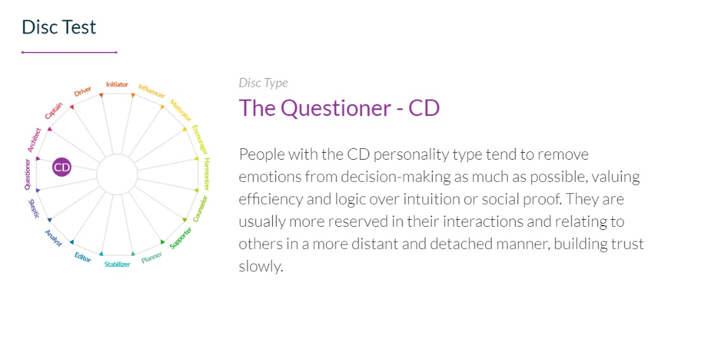

Personal Profile
Myers Briggs Test – Result: Protagonist (ENFJ-A)

My Learning Style Test – Result – Visual Learner

The DISC Personality Test – Result: The Questioner

Personal Summary of Results
What do the results of these tests mean for you?These tests are a clever way to gauge a person's skills and distinctions. The experience itself was enlightening however, these results are to be taken with a grain of salt. The outcome of these tests allowed me to further the understanding of myself — the tests also pointed out attributes that I possess that I was not consciously aware of that I would like to explore moving forward. Furthermore, the assessment of these tests allows me to recognize some of my weaknesses that I was not fully aware I possessed or that I have not actively reflected on.
How do you think these results may influence your behaviour in a team?
According to the results of these tests, I am inclined to place myself in the role of the analytical person in the group that challenges the goals and/or aspirations of the team as well as be the person who bolsters the team’s morale and motivation. However, I do not directly pursue nor desire the role of the leader. As with my results, I aspire to help people and do my best to bring out the best in others. Based on my workplace experience, when it comes to career progression and team activities, these results are accurate.
How should I take this into account when forming a team?
The data within the results highlight that it is important that I reflect on my abilities and natural inclinations when forming a team. I would consider looking for a team that has a diverse skill set that compliments mine. In this way, the team can cover and make up for each other’s weaknesses and put forward members to tasks that suit them which will make our team’s progress effective and efficient.